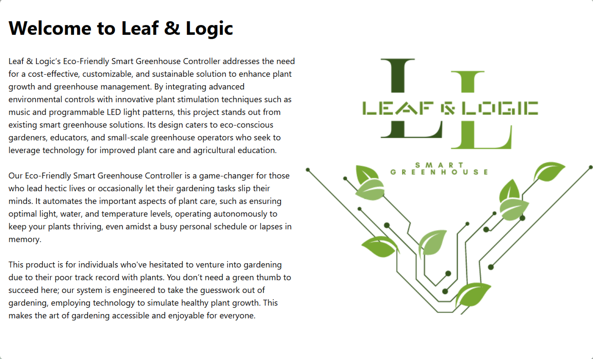
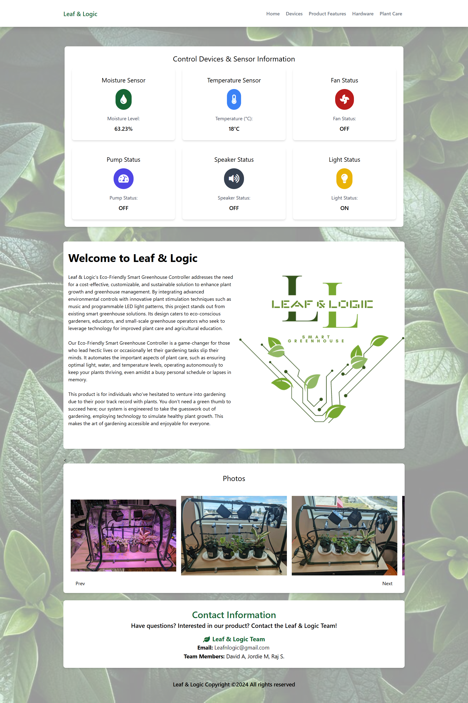
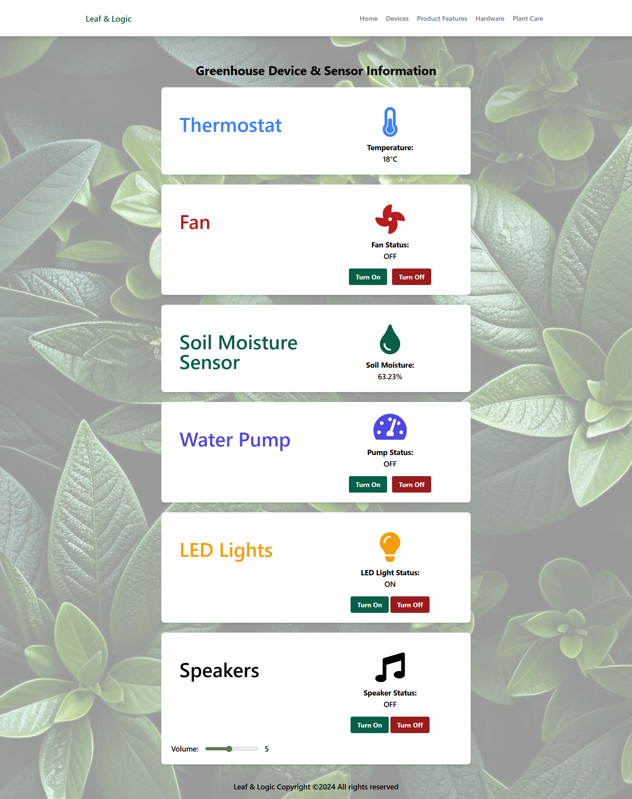
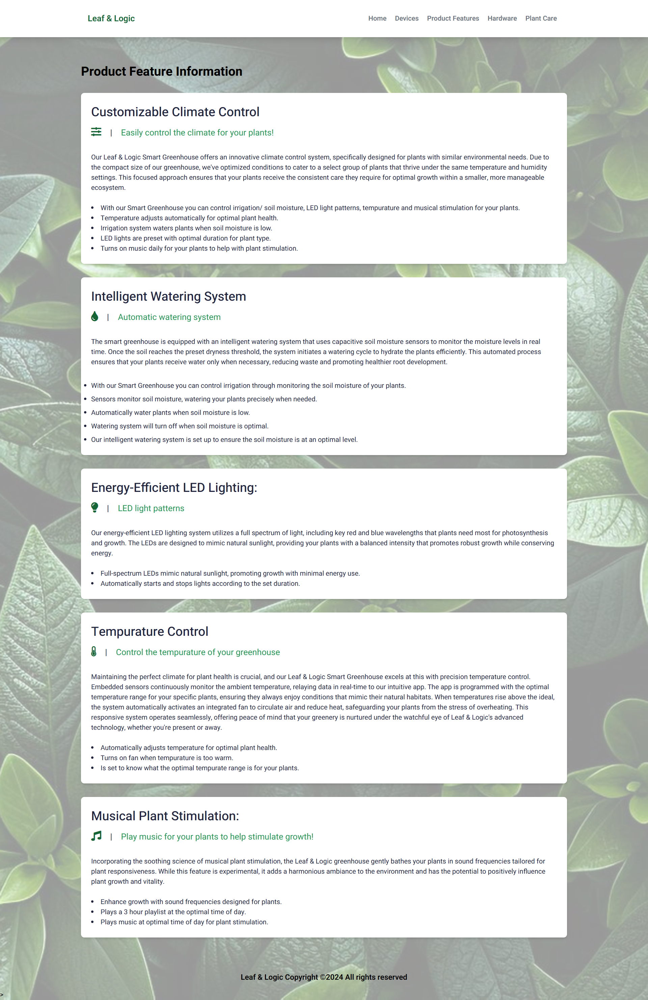
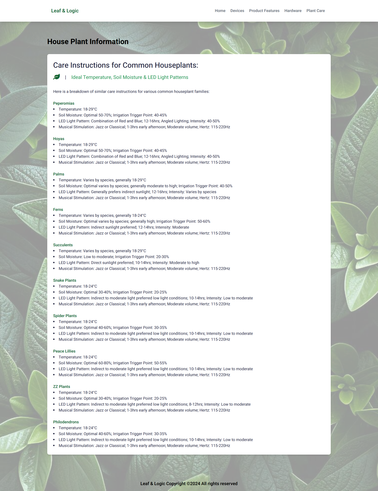
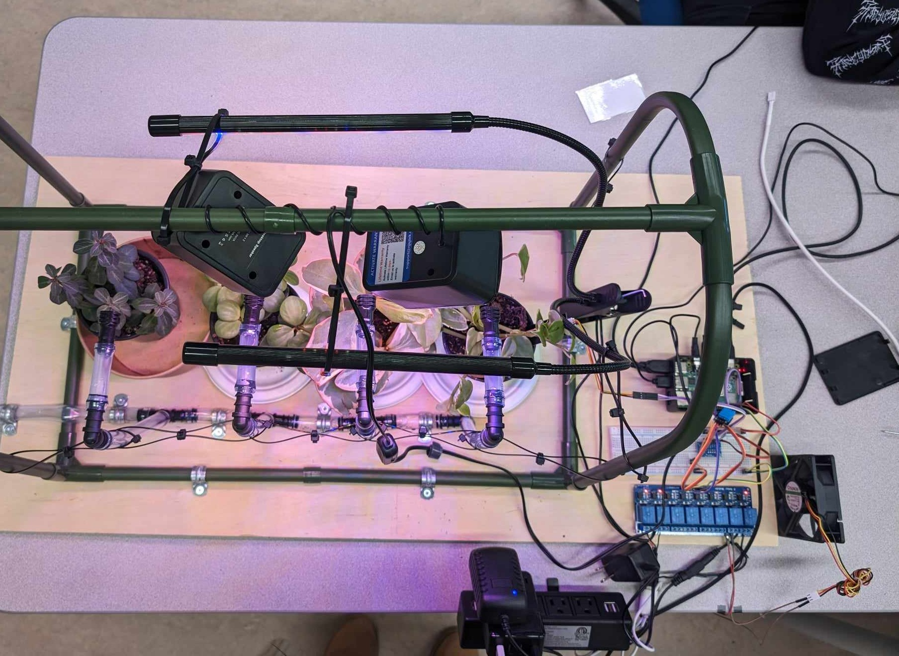
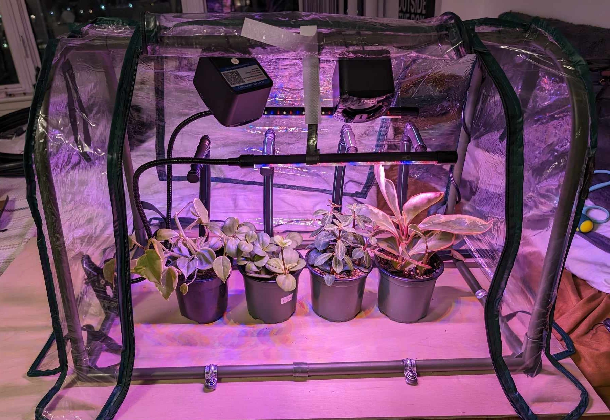
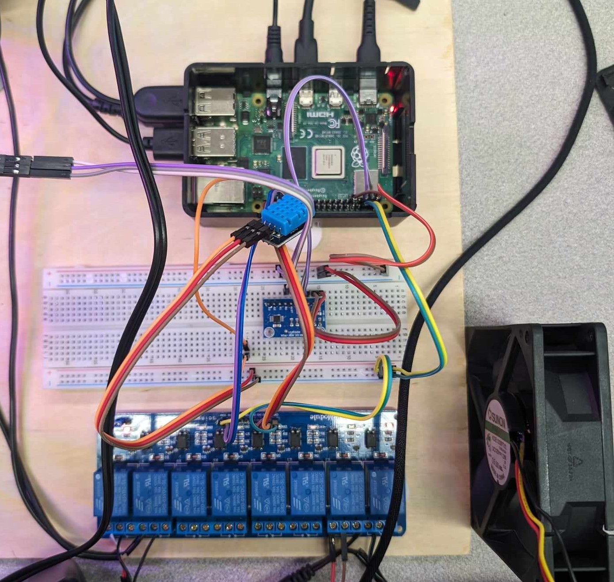

HTML · CSS · JavaScript · Raspberry Pi
An eco-friendly smart greenhouse controller built on a Raspberry Pi, with a custom web dashboard to monitor and control sensors, lighting, irrigation, and musical plant stimulation in real time.

Role
Frontend Developer
Timeline
Winter 2024
Team
David A, Jordan M, Raj S
Status
Decommissioned
The Problem
Busy people struggle to maintain consistent plant care routines. Commercial smart greenhouse solutions are expensive, closed-source, and not customizable. Our team wanted to build something affordable, open, and genuinely educational.
The challenge was connecting physical hardware sensors to a web interface that could display real-time data and allow manual control, all running on a Raspberry Pi with a minimal budget.
The Solution
We built a PVC pipe greenhouse frame with real plants, connected to a Raspberry Pi controlling soil moisture sensors, temperature sensors, a water pump, LED grow lights, a fan, and speakers for musical plant stimulation. I designed and built the entire frontend dashboard to visualize sensor data and control devices.
Real-time display of moisture levels, temperature, and status of all connected devices including fan, pump, lights and speakers.
Manual on/off controls for each device directly from the browser, with volume control for the speaker system.
Detailed care instructions for 10 houseplant species including optimal temperature, soil moisture, LED patterns and musical stimulation frequencies.
Fully responsive layout with mobile dropdown navigation, working across desktop and mobile screens.
Dashboard Screenshots

Home dashboard - sensor readings at a glance

Device control panel - manual on/off for all hardware

Product features - system capabilities explained

Plant care guide - species-specific recommendations
The Physical Build



Tech Stack
Reflection
This was my first experience bridging physical hardware with a web interface. Working with real sensors and real plants made the feedback loop immediate and tangible in a way that purely software projects don't. When the pump didn't trigger correctly, you could see the soil getting dry.
My role was exclusively frontend, which gave me deep experience designing a dashboard UI that had to communicate real-time state clearly and simply. I would have loved to add live data updates using WebSockets rather than static values, and a historical data chart to track sensor trends over time.
Next Project
JP Handy →